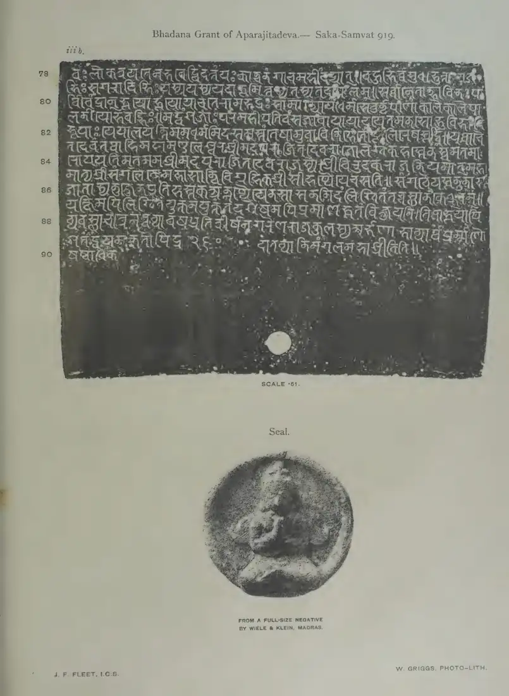
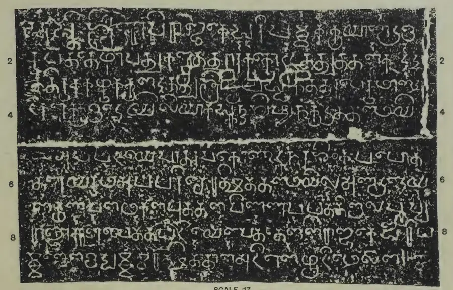
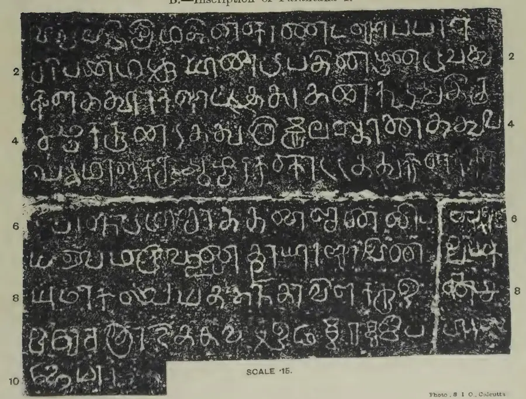

Four ancient Tamiḷ inscriptions at Tirukkaḷukkuṉṟam
No. 38.— FOUR ANCIENT TAMIL INSCRIPTIONS
AT TIRUKKALUKKUNRAM.
BY V. VENKAYYA, M.A.
Tirukkaĵukkuṇram, or Pakshitîrtham as it is called in Sanskrit, is a large village in the Chingleput district on the road from Chingleput to the port of Sadras, about half-way between both. There are two temples, one in the village of Tirukkaĵukkuṇram, called Vêdagiriśvara, and another, named Bhaktavatsala, on a neighbouring hill. Of the four subjoined inscriptions, which are engraved on the wall of the strong-room (tiruv-âbharaṇa-koṭṭaḍi) of the Vêdagiriśvara temple, three were already published in the Madras Christian College Magazine7 from pencil transcripts prepared by myself on the spot. At the suggestion of the Editor, I now republish, from inked estampages, these three inscriptions, along with a fourth, which was not yet published, but only referred to in one of my former articles.8
That part of the wall where these inscriptions are found, is disfigured by a number of mason's marks, which are noticed in the footnotes to the texts. These marks consist, in most cases, of Tamiĵ numerals, engraved probably before attempting to pull down the wall with a view to repair the temple. The numerals would indicate the order in which the stones had to be arranged while rebuilding the wall. This custom of marking is still prevalent in Southern India, as may be seen on the walls of the temples at Madura and Chidambaram, which have been lately repaired, and of the Êkâmranâtha temple at Conjeeveram, which is now undergoing repair. In these places the numerals are not cut with the chisel as at Tirukkaĵukkuṇram, but painted on the stones with tar or chunnam. The alphabet and language of the four subjoined inscriptions is Tamiĵ; but a number of words of Sanskrit origin are written either wholly or partially in Grantha characters. The following is a list of such words and syllables, with the exception of the two words svasti śrî, which occur at the beginning of every one of these inscriptions and are, as a matter of course, written in the Grantha alphabet.
In A. line 1, kôv=irâja, sa of kêsari, and parmma (for varma); l. 3, śrî-Mûlasthâna; l. 4, Skandaśishyan; l. 5, śim of Naraśimga; l. 6, rakshi; pûrvva at the end of l. 7; l. 8, râjâ of râjâkkaĵ, râja and [sa]ri of Râjakêsari; l. 9, rmma and ddharmam rakshi.
In B. line 1, kô of kô=Ppara°; l. 4, śrî-Mûlastâ° (for Mûlasthâ°); l. 7, kô of kôyiṇaṅgai; l. 9, ntr-âdî° (for °ndr-âdî°), °tha[r]mma (for °ddharmam), rakshi, and sa; [°bhai] at the beginning of l. 10.
1 Read vijñêyam (?).
2 Read || tathâ.
3 Read mantavyâ yathâ (?) prati-varshañ; the sign of the vowel t of tîrsha is almost certainly struck out in the original.
4 I am unable to suggest a proper correction, but believe arbhaṇâ to stand for arhaṇ4.
5 Read drammâṇi.
6 This line commences in the original with śata°, and shashthâdhika is engraved below śatadvaya, in a separate line.
7 Vol. VIII. p. 267 ff. and Vol. IX. p. 745 ff.
8 ibid. Vol. IX. p. 748 f.
Plate 1 is bound after this page.
In C. line 1, śrī of śrī-Kaṇṇara; dé at the beginning of l. 2; l. 3, śrī-Múlastd° (for Múlasthá°); śa at the end of l. 5; l. 6, °tr-ádītya (for °dr-ádītya), pa of paṇ, Máhésvara, and rakshai; l. 7, ge of Geṅgai; l. 9, sabhai.
In D. l. 2, dé of déva; śrī-Múlastá° (for Múlasthá°) at the end of l. 4; bhú of bhúmi at the beginning of l. 9; l. 10, agni; l. 11, sabhai; l. 12, dravya and śantr-ádī° (for chandr-ádī°); l. 13, tta of °ttarum and °dharmma (for °ddharma); l. 14, rakshī and °dha[rmma] (for °ddharma); ge and gai of Geṅgai at the beginning of l. 15; the second pa of pápa in l. 16.
A.—INSCRIPTION OF RAJAKESARIVARMAN.
This inscription is dated in the 27th year of the reign of Rájakésarivarman, and records the renewal of a grant which had been made by a king called Skandaśishya and confirmed by another king, Vátápi koṇda Naraśimgappóttaraiyar. Skandaśishya is probably synonymous with Skandavarman, a name which occurs repeatedly in the genealogy of an early branch of the Pallavas,1 whose grants are dated from Palakkada, Daśanapura and Káñchípura.2 Though we have no materials for identifying this king, yet it is certain that he was one of the predecessors of the other Pallava king who is mentioned in the inscription. This is Naraśimgappóttaraiyar,3 which is a Tamiľ form of the Sanskrit name of the Pallava king Narasimhavarman. The epithet Vátápi koṇda, 'who took Vátápi,' which is given to the king, enables us to identify him with certainty with the Pallava king Narasimhavarman I. who is described both in the Kúram plates of Paramésvaravarman I.4 and in the Udayèndiram plates of Nandivarman Pallavamalla5 as the destroyer of Vátápi and as the enemy of Pulikéśin (II.) alias Vallabharája. The Singhalese chronicle Mahávaṅsa also refers to this war between Narasimha and Vallabha, in which Mánavamma, one of the claimants to the kingdom of Ceylon, who was then residing in India, rendered substantial service to the Pallava king.6 The Periyapuráṇam, a Tamiľ work which narrates the lives of the sixty-three devotees of Śiva, and some of the statements made in which have been confirmed by recent epigraphical discoveries,7 refers to the destruction of Vátápi in the account of the life of one of the devotees, viz. Śīruttoṇda-Nâyaṇâr. It is reported that this devotee, who was originally a military man, "reduced to dust the old city of Vátápi"8 for his master, whose name is not given, but who must undoubtedly have been the Pallava king Narasimhavarman I. who destroyed Vátápi according to the Pallava inscriptions.
According to the Periyapuráṇam, Śīruttoṇda-Nâyaṇâr was visited at his own village by the great Śaiva devotee Tiruñânasambandar,9 and the latter mentions Śīruttoṇda by name in one of his hymns.10 Thus Tiruñânasambandar was a contemporary of a general of the Pallava king Narasimhavarman I., whose enemy was the Western Chalukya king Pulikéśin II. The
1 Dr. Fleet's Kanarese Dynasties, p. 16.
2 Ep. Ind. Vol. I. p. 398.
3 [ Póta in Sanskrit and póttu in Tamiľ mean ' the sprout (of a plant)' and are thus synonymous with pallava, 'a sprout,' from which the Amarávatī pillar inscription (South-Indian Inscriptions, Vol. I. No. 32, verse 8), derives the name of Pallava, the supposed ancestor of the Pallava dynasty.—E. H.]
4 South-Indian Inscriptions, Vol. I. p. 152.
5 Salem Manual, Vol. II. p. 359.
6 L. C. Wijesinha's Translation, pp. 41 to 43.
7 See South-Indian Inscriptions, Vol. II. Nos. 29, 40 and 43. In No. 40, there is a distinct reference to the traditional account of the life of Meypporunâyaṇâr, one of the sixty-three devotees, as preserved in the Periyapuráṇam; and the various images that in Nos. 29 and 43 are said to have been set up, show clearly that the account of the lives of Chandésvara and Śirájadévar, respectively, as preserved in the Periyapuráṇam, must have been generally known during the time of Rájarájudéva.
8 Vádávi-ttoṇ-ṇagaran=tugal=ága; Śékkiľâr's Periyapuráṇam, Madras edition of 1870, Part II. p. 316, verso 6.
9 ibid. p. 318, verses 23 and 24.
10 ibid. p. 93.
approximate date derived from this synchronism for the great devotee is confirmed by the fact that he was a younger contemporary of another devotee, called Tirunâvukkaraiyar or Appar, who was first persecuted and then patronised by an unnamed Pallava king.. One of this king's surnames appears to have been Guṇadhara, because a feudatory of his is said to have built a temple of Śiva and called it Guṇadaravîchcharam, i.e. Guṇadhara-Îsvara, probably after his overlord.1 In an archaic inscription in the cave at Vallam near Chingleput, which will be published in South-Indian Inscriptions, Vol. II. Part III., reference is made to a king called Mahèndrapôtarâja alias Guṇabhara, whom Dr. Hultzsch has identified with either of the two Mahèndravarman's mentioned in the Udayèndiram plates of Nandivarman Pallavamalla.2 As the difference between the names Guṇadhara and Guṇabhara is very slight, Mahèndrapôtarâja alias Guṇabhara of the Vallam inscription may be identified with Guṇadhara, who, according to the Periyapurânam, first persecuted and then patronised Tirunâvukkaraiyar. As this devotee was an elder contemporary of Tiruñânasambandar, who, as I have shown, lived during the time of the Pallava king Narasimhavarman I., it is clear that the Mahèndrapôtarâja alias Guṇabhara of the Vallam inscription, whom I propose to identify with the Guṇadhara of the Periyapurânam, could only be Mahèndravarman I., the father of Narasimhavarman I.3 Thus we arrive at the conclusion that the two great Śaiva devotees Tirunâvukkaraiyar and Tiruñânasambandar, whose time has been the subject of controversy for a long time,4 were contemporaries of the two Pallava kings Mahèndravarman I. and Narasimhavarman I., respectively. This result is important for the history of Tamil literature, as it fixes the date of two thirds of the collection of Śaiva hymns, which goes by the name of Dévâram and which is ascribed to Tirunâvukkaraiyar, Tiruñânasambandar, and Sundaramûrti-Nâyanâr. The date of the last of the three authors cannot yet be settled; but he must have been later than the two others, because he refers to them by name in the hymn which is known as the Tiruttonđattogai.5
As regards the king Râjakêsarivarman during whose reign the subjoined inscription was engraved, we do not possess sufficient data for his identification. The name Râjakêsarivarman suggests that the king was a Chôla, because the names Râjakêsarin and Parakêsarin are said to have been borne alternately by the Chôla kings6 and are actually applied to a large number of them in their inscriptions.7 The archaic characters in which the subjoined inscription is engraved, show that, if the king was a Chôla, he was probably not a successor but an ancestor of Parântaka I. This conclusion is supported by the comparatively frequent occurrence of the virâma or, as it is called in Tamil, the pulli, which is marked in no less than twenty cases in this short inscription, while in a pretty long inscription of Madirai konda Parakêsarivarman, i.e. Parântaka I., the pulli occurs only five times.8 The occasional occurrence of the pulli has been noticed also in two other archaic inscriptions,9 but this sign is never met with in the inscriptions
1 ibid. Part I. p. 184, verses 145 and 146.
2 Dr. Hultzsch's Annual Report for 1892-93, p. 2, paragraph 7.
3 See the Table of synchronisms on page 11 of South-Indian Inscriptions, Vol. I.
4 Madras Christian College Magazine, Vol. IX. Nos. 5, 6, 7 and 9.
5 i. e. 'the list of the devotees (of Śiva).' Sundaramûrti is said to have sung this hymn in the temple at Tiruvârûr.
6 Archæological Survey of Southern India, Vol. IV. p. 206, l. 19 f.
7 See Dr. Hultzsch's Annual Report for 1891-92, pp. 4 to 6.
8 South-Indian Inscriptions, Vol. I. p. 113.
9 In the Tamil portion of the Kûram plates of Paramêsvaravarman I., published in South-Indian Inscriptions, Vol. I., the pulli occurs in combination with seven letters of the Tamil alphabet. In the inscription of Nandippôttaraiyan, published in the Madras Christian College Magazine, Vol. VIII. p. 98 ff., the pulli is marked in six cases. In these two inscriptions as well as in the one quoted in the preceding note, the pulli is denoted by a vertical stroke placed over the letter, while, in the Tirukkajukkungam inscription of Râjakêsarivarman, it is denoted by a peculiar crooked line which is not always uniform in its course.
of Râjarâjadêva and in all subsequent Tamiî inscriptions. Assuming that the cessation of the employment of the pullî was gradual, the comparative frequency of its occurrence may be used as an argument to establish the priority of the present inscription to the time of Parântaka I. Again, in the subjoined inscription, the upper horizontal strokes peculiar to certain Tamiî letters are represented by slight curves opening upwards, which remind of similar curves in the corresponding letters of the Sanskrit inscriptions of the Pallava kings Râjasimiha and Mahêndravarman at Conjeeveram. On palaeographical grounds we must, therefore, conclude that this is one of the oldest Tamiî inscriptions yet discovered, though we cannot ascertain even its approximate date. The contents of the inscription do not furnish any materials for this purpose. Râjakêsarivarman renewed, at the request of a certain Puttañ (i.e. Buddha), a grant which had been made by Skandaśishya and confirmed by Narasimihavarman, both of whom are spoken of as “former kings” (pûrva-râjâkkal). It is not said what the nature of the grant was that had originally been made by Skandaśishya, nor do we learn the circumstances that led to the petition (vinnappam) of Puttañ for a renewal of the grant. But so much is certain that, at the time of Râjakêsarivarman, a portion of the Pallava dominions had passed into the hands of the Chôlas.
In this and in the following three inscriptions, Tirukkałukkuñram is said to have been situated in Kalattûr-kôttam and “in the subdivision (kûru) called after itself.”1 In the Appendix to his Manual of the Chingleput District, Mr. Crole gives a list of kôttams with the subdivisions contained in some of them. Among the former he mentions “Kallattur-kottam” in the Chingleput tâlukâ, which is evidently identical with the Kalattûr-kôttam of the Tirukkałukkuñram inscriptions.
TEXT.
| 1 | Svasti2 | śrî | [||*] | Kôv=Irâjakêsariparmma[r*]kku | yâñdu | i- |
| 2 | rubatt-êlâvadu | [|*] | Ka[la]ttûr-kkôttattu=ttañ | kûñru= | ||
| 3 | [T]tirukkałukkuñrattu3 | śrî-Mûlasthânattu | perumâñ | a- | ||
| 4 | đi[gału]kku | iñ[ai]y-iliy=âga | Skandaśishyan4 | kuđuttamaiyi- | ||
| 5 | [ l a]ppa[đi]yê | Pâdâvi5 | koñda | Naraśimgappôt- | ||
| 6 | taraiyarum | apparišê | rakshittamaiyil | Anđuraiya- | ||
| 7 | ñ | Guñavañ | magañ | Puttañ | vinnappattinâl | pûrvva- |
| 8 | râjâkkal6 | [vai]tta | pađiyê7 | vaittên(ñ)=Irâjakê[sa]ripa-8 | ||
| 9 | rmman-êñ | [|*] | i-ddharmmam | rakshittâñ | ađi en | muđi mêliña || |
TRANSLATION.
(Line 1.) Hail! Prosperity! In the twenty-seventh year (of the reign) of king Râjakêsarivarman.
(L. 2.) “Whereas Skandaśishya had given (certain land) free from taxes to the feet of the god of the holy Mûlasthâna (temple) at Tirukkałukkuñram in Kalattûr-kôttam (and) in
1 The actual name of this subdivision was probably Tirukkałukkuñra-kûru.
2 The aksharas from sva of svasti to ja of râja are engraved over an erasure.
3 Above the tu of kuñrattu is engraved some letter which looks like the modern Tamiî śa, and over the word Mûlasthâna, the modern Tamiî numeral ‘twenty-one.’
4 The engraver had originally written śya instead of śi and then partially erased the y.
5 The reading Vâdâvi or Vâtâpi is also possible; Pâdâvi, Vâdâvi and Vâtâpi are ancient names of Bâdâmi in the Bombay Presidency.
6 The aksharas from jâ to l appear to be engraved over an erasure.
7 Over the pa of pađi, the modern Tamiî numeral ‘five’ seems to be engraved.
8 The engraver had originally written ja instead of sa and then corrected only the bottom, leaving the top as it stood.
the subdivision called after itself, (and) as, accordingly, Narašingappôttaraiyar, the conqueror of Vātāpi, had confirmed (the grant) in the same manner,—I, Rājakēsarivarman, at the request of Puttaṇ, the son of Guṇavaṇ of Aṇḍurai, have maintained (the grant) as former kings had maintained it.
(L. 9.) “The feet of one who protects this charity, shall be on my head!”1
B.—INSCRIPTION OF PARANTAKA I.
This inscription is now published for the first time. It is dated during the 13th year of the reign of Madirai koṇda Parakēsarivarman, and records the gift of a perpetual lamp to the Tirukkaļukkuṇram temple. Madirai koṇda means ‘who took Madirai (i.e. Madhurâ),’ and is synonymous with the Sanskrit Madhurântaka, a name which is applied in the large Leyden grant to two of the successors of Parantaka I.2 Several inscriptions of Madirai koṇda Parakēsarivarman have already been published,—three from the Kailâsanâtha temple at Conjeeveram3 and one from Tiruppûndurutti near Tanjore.4 The endorsement on the Udayêndiram plates of Nandivarman5 and on those of Nandivarman Pallavamalla6 are dated during the reign of the same king. The Tamiļ portion of the Udayêndiram plates of the Gaṅga-Bâṇa king Prīthivīpati II. alias Hastimalla belongs to the reign of the same Madirai koṇda Parakēsarivarman7 and implies that he bore the surname Viranârâyaṇa.8 In the Sanskrit portion of the same grant, the two names Viranârâyaṇa9 and Parântaka10 are used for the Chôla king. In the large Leyden grant the name Parantaka alone appears.11 In both of these copper-plate grants, he is said to have been the son of the Chôla king Âditya (I.) and the grandson of Vijayâlaya. From the Udayêndiram plates we learn that he uprooted the Bâṇa king12 and gave the Bâṇa territory to his Gaṅga feudatory Prīthivīpati II.13 He conquered the Pâṇdya king Rājasimha14 and defeated the army of the king of Ceylon.15 This event appears to be referred to in the Mahâvaṇsa16 when it says that the Singhalese king Kassapa V. sent an army to aid the Pâṇdya king against the Chôla, but that the expedition was not successful. Kassapa V. is supposed to have reigned from A.D. 929 to 939.17 If the chronology of this portion of the Mahâvaṇsa can be relied upon,18 we can get to a nearer approximation with regard to the date of Parantaka I. than what is furnished by the Âtakûr inscription, from which it appears that this king’s eldest son Rājâditya had been killed before A.D. 950. In the verse which refers to Parantaka I. the Kaliṅgattu-Paraṇi mentions the conquest of Ceylon and Madhurâ.19 The large Leyden grant says that Parantaka I. covered with gold the Śiva temple at Vyâghrâgrahâra,20 which is a Sanskrit rendering of Puliyûr, one of the Tamiļ names of Chidambaram. This evidently means that he built the so-called Kanakasabhâ or Golden Hall at Chidambaram. In the collection of Śaiva hymns known as Tiruviṣaippâ, there is a poem composed by Kaṇdarâdittar,
1 i.e. “I worship their feet.”— [A similiar captatio benevolentia, the transcription and translation of which must be changed in accordance with the one given here, occurs in line 9 of the Vêlûr inscription of Kaṇnaradêva; South-Indian Inscriptions, Vol. I. p. 77.—E. H.]
2 South-Indian Inscriptions, Vol. I. p. 111.
3 ibid. Nos. 82, 83 and 145.
4 Madras Christian College Magazine, Vol. VIII. p. 104 ff.
5 See p. 147 above.
6 Salem Manual, Vol. II. p. 359.
7 ibid. p. 371.
6 The village granted by the inscription was called Viranârâyaṇachchêri after the reigning king.
9 Salem Manual, Vol. II. p. 372, verse 6.
10 ibid. p. 373, verse 25.
11 Archæological Survey of Southern India, Vol. IV. p. 206, l. 32.
12 Salem Manual, Vol. II. p. 372, verse 9.
18 Ind. Ant. Vol. XXIII. p. 296, note 2.
14 Salem Manual, Vol. II. p. 372, verse 11.
15 ibid. verse 10.
16 L. C. Wijesinha’s Translation, p. 80.
17 ibid. p. xxii.
18 That the chronology of the Mahâvaṇsa is not beyond suspicion, has been pointed out by Dr. Hultzsch in his Annual Report for 1891-92, p. 5, note *.
19 Canto viii. verse 23.
20 Archæological Survey of Southern India, Vol. IV. p. 206, l. 35 f.
who calls himself 'king of the people of Tañjai (Tanjore)'1 and who was very probably identical with Gañdarádityavarman, mentioned in the large Leyden grant as the second son of Parântaka I. The eighth verse of this hymn refers to a Chóla who conquered the dominions of the Pândya king and Ceylon, and who was the lord of Uṛaiyûr. It further states that this king covered with gold the hall at Chidambaram. The Vikrama-Šólaṇ-Ulá, extracts from which were lately published by Mr. V. Kanakasabhai Pillai, mentions a king 'who constructed a roof of gold to the sacred hall in the temple at Chidambaram.'2 The Tiruviśaippâ and the Vikrama-Šólaṇ-Ulá evidently refer to the event that is mentioned in the large Leyden grant as having occurred during the time of Parântaka I. The Koñgudêsarájákkał, a chronicle the statements made in which are to be accepted with caution, notices a real historical event when it says that the Chóla king Viranârâyaṇa built the Kanakasabhâ at Chidambaram.3 From the Udayêndiram plates it appears that Parântaka I. married the daughter of the Kêrala king.4 Leaving aside the numerous unpublished inscriptions of Parântaka I, the five published ones, which have been found at Conjeeveram in the Chingleput district, Tiruppûndurutti near Tanjore, and Udayêndiram in the North Arcot district, show that his dominions must have been very wide. The latest date we have for him, is the 36th year of his reign.5
TEXT.
| 1 | Svasti | śrí | [||*] | Madirai | koñda | kô=Ppara[k]ê- |
| 2 | śaripañmarku | yâṇđu | padiṇ-m[ú]ñrâvadu | |||
| 3 | Kalattûr-kkôt[ta]ttu | taṇ | kûrru | Tiru- | ||
| 4 | [ta]luk[ku]ñrattu6 | 7śrí-Múlastâ[ña]ttu=p- | ||||
| 5 | pe[ru]mâ[lu]kku | Âm[ú]r-kkôtťattu=[Kka]raikkâ- | ||||
| 6 | [tťûr] | N[eđu]mâ[r=Ch]âttaṇ | Šeñnip[pêra]- | |||
| 7 | yaṇum | ivaṇ8 | tâyâr | [Kô]yiṇa[ñgai]- | ||
| 8 | yum=âga | v[ai]yt[ta] | [nu*]ndâ-vilakku | o[nṛu]9 [| *] | ||
| 9 | idu | śa[ntr]-âdittavar | [|*] | i-tha[r]mma[m*]10 | rakshippâr [sa]- | |
| 10 | bh[ai]yâr [||*] |
TRANSLATION.
Hail ! Prosperity ! In the thirteenth year (of the reign) of king Parakêsarivarman, the conqueror of Madirai,— Neđumâl Šâttaṇ Šeñnippêrayaṇ of Karaikkâtťûr in Âmûr-kôtťam11 and his mother Kôyiṇañgai12 together gave one perpetual lamp13 to the god of the holy Múlasthâna (temple) at Tirukkałukkuñram in Kalattûr-kôtťam (and) in the subdivision called after itself. This (shall last) as long as the moon and the sun (endure). The members of the assembly (sabhâ) shall protect this gift.
1 Tañjaiyar kôṇ . . . . Kañdarádittaṇ ; Tiruviśaippâ, Madras edition of 1879, p. 76, verse 10.
2 Ind. Ant. Vol. XXII. p. 142.
3 Salem Manual, Vol. I. pp. 39 and 40.
4 ibid. Vol. II. p. 372, verse 8.
5 Dr. Hultzsch's Annual Report for 1891-92, inscription No. 100 of 1892.
6 Read Tirukkałukkuñrattu.
7 Read Múlasthânattu.
8 In this line the Tamiľ numeral 'seven' seems to be engraved over i of ivaṇ; 'twenty-two' below the aksharas vaṇ tâ of ivaṇ tâyâr; and 'twenty' over âgai of nañgai.
9 The modern Tamiľ numeral 'three' appears to be engraved over nṛru of oṇru.
10 Read i-ddharmam.
11 See p. 149 above, note 7.
12 This name is made up of kôyil, 'a temple,' and nañgai, 'a lady.'
13 Nundâ-vilakku means 'a lamp which does not require to be trimmed.' See South-Indian Inscriptions, Vol. II. p. 132, note 3.
C. AND D.— INSCRIPTIONS OF KANNARADEVA.
These two inscriptions are written in bold archaic characters which resemble very closely those of another inscription of Kaṇṇaradēva near Vēlūr (Vellore),1 but are more rounded than those of other ancient Tamil inscriptions. Both inscriptions are dated during the reign of Kaṇṇaradēva,— the first in the 17th and the second in the 19th year. To the name of the king is prefixed in both of them the epithet Kachchiyun-Tañjaiyuñ-koṇda, 'who took Kachchi and Tañjai.' Kachchi is the ancient Tamil name of Kāñchipura (Conjeeveram), the capital of the Pallavas, and Tañjai is a shorter form of Tañjāvūr (Tanjore), the Chôla capital. The actual meaning of the attribute appears to be that the king conquered the Pallava and the Chôla countries.
The inscription near Vēlūr is dated during the 26th year, but here there is no reference to the conquest of Kachchi and Tañjai. The Aruṇâchalêsvara temple at Tiruvaṇṇamalai in the South Arcot district contains two fragmentary inscriptions of Kaṇṇaradēva.2 As the distinguishing epithet is missing, it is not absolutely certain if the Vēlūr and Tiruvaṇṇamalai records belong to the same reign as the two Tirukkalukkuṇram ones. Even if this should not be the case, the fact that the two subjoined inscriptions are found at Tirukkalukkuṇram, which is within the Pallava dominions, testifies to the correctness of the statement that the king conquered the Pallava country. The name Kaṇṇara, which is a vulgar form of the Sanskrit Kṛishṇa, does not occur among the members of any of the dynasties of the South. Nor is it found among those northern dynasties which are known to have invaded the South, except among the Râshṭrakûṭas. That this dynasty exercised a considerable influence over the history of Southern India, is established by the following facts.
1. In an inscription of Gôvinda III.,3 this Râshṭrakûṭa king claims to have conquered, and levied tribute from, Dantiga, the Pallava ruler of Kāñchi.
2. The Udayêndiram plates of the Gaṅga king Pṛithivipati II., who was a tributary of the Chôla king Parântaka I., appear to refer to an invasion of Amôghavarsha (I.) and its repulsion by the Gaṅga king's grandfather, Pṛithivipati I.4
3. The Âtakûr inscription of Śaka-Samvat 872 reports that Bûtuga, a Gaṅga feudatory of the Râshṭrakûṭa king Kṛishṇa (III.) alias Kannaradēva, treacherously killed the Chôla king Râjâditya in a battle at Takkôla.5 The Dêôlî plates of Kṛishṇa III., dated Śaka-Samvat 862, report that the king killed Dantiga and Bappuka, and that he transferred the Gaṅga territory from Rachhyâmalla— the Râchamalla of the Âtakûr inscription— to Bhûtârya.6 This is evidently the Bûtuga of the Âtakûr inscription. In his remarks on the Dêôlî plates, Dr. Bhandarkar suggests that Bappuka might be identical with the Chôla king Râjâditya,7 who is mentioned in the Âtakûr inscription. But no connection can be established between the two names Bappuka and Râjâditya, and the war with the latter need not yet have taken place in the Śaka year 862, the date of the Dêôlî plates.
4. The statement of the Âtakûr inscription that Kṛishṇa III. fought against Râjâditya, is confirmed by the large Leyden grant, which reports that the Chôla king Râjâditya, the son of Parântaka I., died in battle with Kṛishṇarâja.8
The characters in which the two subjoined inscriptions are engraved, look more ancient than those employed in the inscriptions of the Chôla king Râjarâjadēva, and less archaic than those
1 South-Indian Inscriptions, Vol. I. p. 76.
2 Madras Christian College Magazine, Vol. IX. p. 665.
3 Ind. Ant. Vol. XI. p. 127.
4 Salem Manual, Vol. II. p. 373, verse 16.
5 Ep. Ind. Vol. II. p. 168.
6 Journ. Bo. As. Soc. Vol. XVIII. p. 13 of the Reprint.
7 ibid. p. 4.
8 Archæological Survey of Southern India, Vol. IV. p. 206 f., ll. 42 to 45.
in which the grants dated during the reign of Parântaka I. are recorded. Râjarâjadêva was one of the most powerful of the Chôla kings, as is shown by the fact that his inscriptions are found on the walls of almost every ancient temple in the Tamil country. Consequently, it is very improbable that Kaṇṇaradêva's invasion took place during his reign. Again, the three inscriptions of Parântaka I. found in a Pallava temple at Kâñchîpuram,1 which was the Pallava capital, and the above published inscription from Tirukkalukkuṇram, which must also have been situated in the Pallava territory, show either that Parântaka conquered the Pallavas himself, or, if the conquest had been effected by one of his predecessors, that he continued to keep them under subjection. The two subjoined inscriptions say that Kaṇṇara took Kachchi and Tañjai, and imply that he enjoyed undisturbed possession of the country for a considerable length of time; for, otherwise grants would not have been issued in his name. It is very unlikely that a king like Parântaka, whose military resources were enough to keep the Pallavas under subjection and at the same time to conquer the Pândya and other kings, would have allowed a town like Tañjai, situated as it is in the heart of the Chôla country, to be occupied by a victorious invader. Thus palæographical and historical considerations combine together in fixing the period of these grants between the death of Parântaka I. and the accession of Râjarâjadêva. This period was occupied, according to the large Leyden grant, by the reigns of six Chôla kings.2 Of the military achievements of none of them has it much to say. The Kaliñgattu-Paraṇi leaves out these six kings entirely in the account which it gives of the ancestors of the reigning king Kulôttuṅga I.,3 and inscriptions dated during their reigns are conspicuous by their absence even in the heart of the Chôla country. Of course, some of those which begin either with kô Râjakêsarivarman or kô Parakêsarivarman alone, may have to be referred to the reigns of two or more of these kings. But the fact that these contain no historical introduction is significant, and would imply that their military achievements were not worthy of record. These considerations naturally lead to the inference that, during the reigns of these six kings, the Chôlas occupied quite an inferior position and were probably feudatories of some foreign king. It was just during this period that the invasion and the considerably long occupation of the Chôla dominions by Kaṇṇaradêva was possible. Not long after the death of Parântaka I., Bûtuga, a Gaṅga feudatory of the Râshṭrakûṭa king Kṛishṇa III. alias Kannaradêva, fought a battle at Takkôla,— a place which has not yet been identified,— against the Chôla king Râjâditya, who was defeated and killed in the battle. Commenting on the unreliable nature of most of the statements made in the spurious Sûđi plates of Bûtuga, Dr. Fleet remarks that there are references to two real historical events in the inscription.4 There is, I think, a third historical event when they say that, after defeating the Chôla king Râjâditya, the Gaṅga king Bûtuga, under orders from Kṛishṇa III., besieged Tañjâpuri, i.e. Tanjore.5 As has been pointed out above, the Chôla power was very weak after the death of Parântaka I., and nothing could stand in the way of the victor at Takkôla proceeding straight to Tanjore, which appears to have been the Chôla capital during the time of Râjâditya's successor Gaṇdarâdityavarman,6 and capturing it. It was also stated that palæographical considerations point to the interval between the death of the Chôla king Parântaka I. and the accession of Râjarâjadêva as the approximate period of the subjoined inscriptions, which are dated during the reign of Kaṇṇaradêva; that, about the commencement of this interval, the Râshṭrakûṭa king Kṛishṇa III.
1 See note 3, p. 280 above.
2 These were Râjâditya, Gaṇdarâdityavarman, Arimjaya, Parântaka II., Âditya-Karikâla and Madhurântaka. The fact that Âditya-Karikâla preceded Madhurântaka, shows that the succession was disputed after the death of Parântaka II.; South-Indian Inscriptions, Vol. I. p. 112.
3 The next event that is mentioned after the conquest of Ceylon and Madhurâ, which took place during the reign of Parântaka I., is the capture of Udagai, which occurred during the reign of Râjarâjadêva; see canto viii. verses 23 and 24.
4 See p. 175 above.
5 See p. 183 above.
6 See note 1, p. 281 above.
alias Kannaradêva actually killed the reigning Chôla king; and that the name Kannara does not occur either among the southern dynasties, or among the occasional conquerors of the South, except among the Râshtrakûṭas. From these facts the conclusion seems to be irresistible that the Kannaradêva of the subjoined inscriptions, who took Kâñchi and Tañjâvûr, was no other than the Râshtrakûṭa king Krishna III. who was also called Kannaradêva.
The donor in the inscription B. was Neđumâl Sâttañ Señnippêrayañ of Karaikkâttûr, and in the inscription D. Sâttañ Señnippêraiyañ of Karai. As pointed out to me by the Editor, the names of these two donors are very similar, and the name Karai, which occurs in D., may only be a shorter form of Karaikkâttûr in B. It is, therefore, not improbable that the donors in B. and D., which belong to the reigns of Parântaka I. and of Kannaradêva, respectively, were identical. If they were the same, the identity of the Kannaradêva of the two subjoined inscriptions with the Râshtrakûṭa king Krishna III. would receive some support; for, we would then have direct evidence to show that B. and D. were engraved within the life-time of the same man.
Of the two subjoined inscriptions, C. records the grant of a perpetual lamp to the Tirukkalûkkuñram temple, and D. the building of a hall (ambalam) at Tirukkalûkkuñram and a grant of some land to this hall.
TEXT OF C.
| 1 | Svasti | śrî | [||*] | Kachchiyun=Tañjaiyuñ-koñda | śrî-Kanṇara-1 |
| 2 | dêvarkku | yâñdu | padiñ-êlâvadu | Kalattûr-kkôtta- | |
| 3 | ttu | tañ | kûḥru | Tirukkalûkkuñrattu | śrî-Mûlastânat- |
| 4 | tu2 | perumâñ=adigalu[k*]ku | Karai[y-u]đaiya | Baladêvañ=âgiya Parân- | |
| 5 | takappêrarayañ | vaiytta | nundâ-[vi]lakk=onḥru | [||*] idu śa- | |
| 6 | ntr-âdityavar=pañ-Mâhêsvarar | rakshai [||*] | 3Parântakappêraraya- | ||
| 7 | n | vaiytta | vilakku | mut[ti]l | Gengaiy-idai=Klumariy-i.4 |
| 8 | đaiy=ełu-nûḥru=kkâdamuñ=j[e]ydâr | śeyda | pâvattiḥ=pađuvô- | ||
| 9 | m=âñôn=Tirukkalûkkuñrat[tu] | sabhaiyôm | [||*] |
TRANSLATION.
(Line 1.) Hail! Prosperity! In the seventeenth year (of the reign) of the glorious Kanṇaradêva, the conqueror of Kachchi and Tañjai,—Baladêvañ alias Parântakappêrarayañ of Karai gave one perpetual lamp to the feet of the god of the holy Mûlasthâna (temple) at Tirukkalûkkuñram in Kalattûr-kôttam (and) in the subdivision called after itself. This (grant shall be under) the protection of all Mâhêsvaras as long as the moon and the sun (endure).
(L. 6.) “If (we), the members of the assembly (sabhâ) of Tirukkalûkkuñram, obstruct (the burning of) the lamp given by Parântakappêrarayañ, we shall incur the sin committed by those who commit seven hundred murders5 near the Gangâ and near Kumari.”6
1 Above the first line, beginning from n of Kachchiyun and extending to the end, is an incomplete inscription which runs as follows:— Svasti śrî [||*] Kô=Pparakêšariva[r]mma[r]kku yâñdu irañ[đâvadu*].
2 Read Mûlasthânattu.
3 The sign of length of râ in Parântaka is joined to the r, so that râ looks as if it were na.
4 Between the 6th and 7th lines, from the second g of Gengai to ri of Kumari in line 7, some symbols are engraved, of which the first looks like the modern Tamil letter nâ and the rest seem to stand for the numeral ‘twenty-three.’
5 In the Madras Christian College Magazine, Vol. IX. p. 750, I had taken kâdam to mean ‘a measure of distance equal to 10 miles.’ The Editor pointed out to me that kâdam is derived from the Sanskrit ghâta, ‘a murder.’
6 Kumari is a name which occurs very often in the imprecatory portion of Tamil inscriptions. Local tradition asserts the existence of a river of that name, which people frequented for bathing, and after which the southern portion of the peninsula was called. The absence at the present time of a river answering to Kumari in the
Plate 2 is bound after this page.
TEXT OF D.
| 1 | Svasti | śrī | [||*] | Kachchiyun=Tañ[j]aiyuñ=koñ- | |
| 2 | đa | Kaṇṇaradēvarċu | yâṇdu | pat[t-o]ṇba-¹ | |
| 3 | dâvadu | [|*] | Kalattûr-k[kô]tjṭattu ² | tan [kú]rĵru=³ | |
| 4 | Tirukkaĵu[k*]kuṇṭattu | śrī-Múlastâ- | |||
| 5 | ṇattu ⁴ | terċil=ambalam | Karaiy-uđaiya | ||
| 6 | Šâttaṇ | Šeṇṇippairaiyan ⁵ | amba- | ||
| 7 | lamm=e[đut]tu | idaṇukku | ambala-ppuṭam=â[ga | Îsjâ- | |
| 8 | naśivaṇ=âgiya | Nakkađi-Baṭtaṇ | pakkal | vilai-koṇđa | |
| 9 | bhúmi | Kalarichcheĵuvuñ=kiṇaĵum | tanṇ[î]r | atṭtu[va]- | |
| 10 | darċum | agniy=iduvadaĵkumm=âga ⁶ | ambala-pa- | ||
| 11 | tji⁷ | vaiyttamaiyil | sabhaiyômum | iva- | |
| 12 | n | pakkal⁸ | iĵai-dravyam | koṇđu emm=ûrum šantr-âdi- | |
| 13 | ttarum | ul-aĵavum | iĵaiy=ilitti=[kku]đuttôm | [|*] i-[d*]dha[r]mma- | |
| 14 | m rakshittân ađi talai | m[ê]liṇa | [|*] i-[d*]dha[rmma]m | iĵakkiṇân | |
| 15 | Geṅgaiy-idai=Kkumaĵiy-idai | eĵu-nûĵĵru=kkâda- | |||
| 16 | mum | šeydâr | šeyda ⁹ | pâpattil pađuvâr | [||*] |
TRANSLATION.
(Line 1.) Hail! Prosperity! In the nineteenth year (of the reign) of Kaṇṇaradēva, the conqueror of Kachchi and Tañjai.
(L. 3.) “Whereas Šâttaṇ Šeṇṇippêraiyaṇ of Karai had built a hall (ambalam) to the south of the holy Múlasthâna (temple) at Tirukkaĵukkuṇṭam in Kalattûr-kôtjṭam (and) in the subdivision called after itself, and had given as a dependence (? puṭam) of this hall, viz. for providing water and for supplying fire to the hall,¹⁰ a well and (one) patji of land (called) Kalarichcheĵuvu,¹¹ which he had purchased from Îsânaśiva alias Nakkađi-Bhatṭa,— (we), the members of the assembly (sabhâ), having taken from this (person) the money for taxes, gave (the land) tax-free for as long as our village,¹² the moon and the sun endure.”
extreme south of the peninsula has been explained by supposing that the river was swallowed up by the sea. In his History of Tinnevelly, p. 19 ff., Dr. Caldwell has shown, from explicit statements contained in the Periplâs, that Kumari was not a river but a place, and that people did, in ancient times as now, not bathe in a river but in the sea. Dr. Caldwell adds that the title Kumarichchêrppaṇ, which is given to the Pâṇdya king on account of the proximity of his dominions to Cape Comorin, also implies that Kumari was not a river but a tract of land.
¹ In the original the symbols for e and t of to are joined together.
² The symbol for š and k of kô are joined together in the original.
³ In the original it looks as if there were three r's here instead of two, of which the first is joined to the kú which precedes it.
⁴ Read Múlasthânattu.
⁵ Read pêraiyaṇ; it is not impossible that the engraver has himself made this correction.
⁶ Over the ku of kumm=âga some symbol which looks like the modern Tamiĵ ṇâ is cut, and between *kumm=âga of this line and sabhai of the next, the modern Tamiĵ numeral 'nineteen' appears to be engraved.
⁷ Over the tji of patji and the ai of vaiytta, the modern Tamiĵ symbol for the numeral 'ten' is engraved.
⁸ Above the l of pakkal the modern Tamiĵ numeral 'eight' is engraved.
⁹ Over the aksharas šeyda pâ the modern Tamiĵ numeral 'seventy-seven' is engraved.
¹⁰ In the Kûram plates, provision is made for water and fire required for a maṇdapa at Kûram; see South-Indian Inscriptions, Vol. I. p. 151.
¹¹ The word kaĵari means 'uncultivated ground' and šeĵuvu means 'a field.' Kalarichcheĵuvu was probably a proper name, denoting a certain tract of rice-fields.
¹² It is not common in inscriptions to make the duration of a grant co-extensive with that of the village in which the object granted lies.
(L. 13.) “The feet of one who protects this charity, shall be on (our) heads. One who injures this charity, shall incur the sin committed by those who commit seven hundred murders near the Gangâ and near Kumari.”

A.—Inscription of Rajakesarivarman.

SCALE 17.
B.—Inscription of Parantaka I.

SCALE 15.